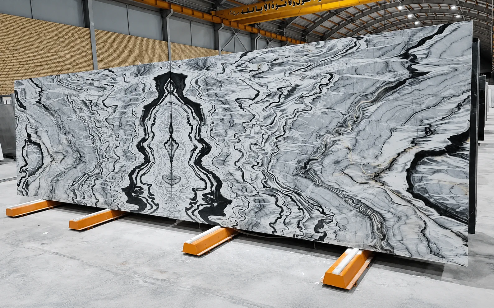

Architectural buyers, stone fabricators, and tile wholesalers in Dubai, Riyadh, and Doha frequently evaluate both Pakistani and Iranian natural stones. This technical guide explains the material properties, recovery tolerances, and export container loading standards of both origins.
Geological Character & Aesthetic Distinctions
Natural stone procurement hinges on balancing aesthetics, structural integrity, and cutting recovery. Balochistan Minerals operates direct quarry sourcing across two premier stone domains:
- Balochistan Marble (Pakistani Origin): Renowned for bright crystalline matrices, dense calcium carbonate crystallization, and warm mineral veining. Quarried predominantly in Loralai, Lasbela, and Khuzdar districts.
- Iranian Premium Marble (Persian Origin): Celebrated for refined sedimentary tones, deep neutral charcoals, and delicate linear veining. Sourced from world-renowned quarry belts in Isfahan and Shiraz, and handled through Balochistan Minerals’ dedicated transit corridor.
Core Product Line Comparison
| Stone Variety | Origin | Color & Matrix | Best Suited For |
|---|---|---|---|
| Silver Steam | Iran | Luminous white with soft silver-grey linear veins | Luxury hotel lobbies, vanity countertops, feature walls |
| Pietra Grey | Iran | Deep charcoal ground with crisp white calcic veins | Contemporary commercial flooring, bathroom cladding |
| Persian Silk Tundra Grey | Iran | Muted ash-grey with tonal clouding and fine veining | High-traffic residential floors, interior wall panels |
| Pakistani White Marble | Balochistan | Milky-white calcite matrix with subtle grey streaks | Standard tile fabrication, stairs, exterior paving |

Technical & Physical Durability Benchmarks
Both stone categories demonstrate high mechanical resistance suitable for heavy commercial foot traffic:
- Compressive Strength: 110 – 140 MPa (ASTM C170), ensuring robust load-bearing capability.
- Water Absorption: Under 0.25% by weight (ASTM C97), preventing moisture stains and efflorescence.
- Density: 2,680 – 2,740 kg/m³, providing clean edges when cutting with bridge saws or waterjet cutters.
Block Selection & Seaworthy Crate Packaging
Balochistan Minerals provides physical inspection at our central stockyards in Quetta and Hub:
- Quarry Blocks (Gang-saw size): Regular rectangular blocks (2.4m – 3.2m length x 1.4m – 1.9m height) without structural fissures, inspected via sonic testing upon request.
- Polished Slabs (20mm & 30mm): Book-matched and slip-matched slabs packaged into reinforced, fumigated wooden bundles (A-frames) with anti-scratch protective film.
- Container Payload: 20-foot heavy-rated containers carry up to 27 MT (approx. 450–480 m² of 20mm slabs, or 300–320 m² of 30mm slabs).
Explore Available Marble Inventory & Request Slabs Photos
Inspect live block dimensions, slab bundle photos, and FOB Karachi container quotes directly with our stone export team.
View Marble Catalog